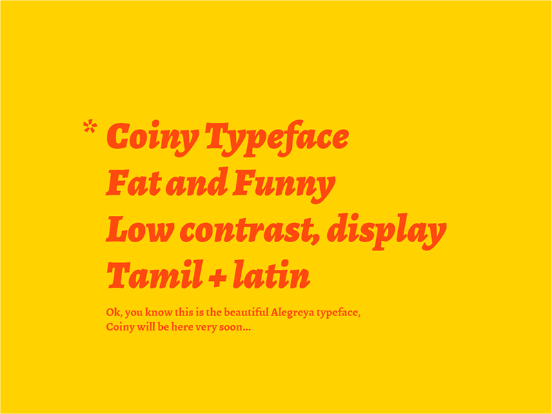
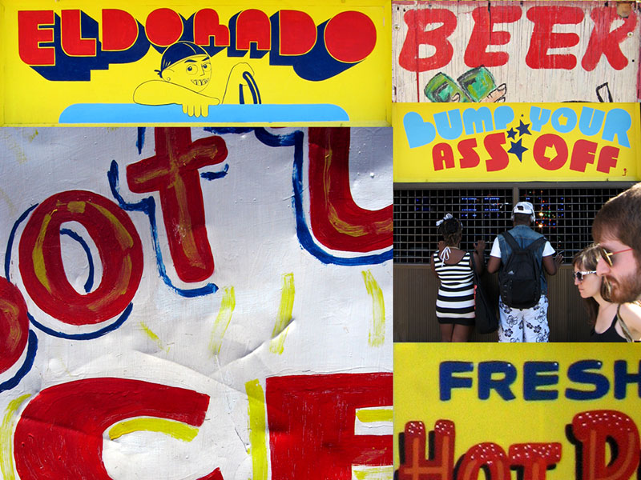
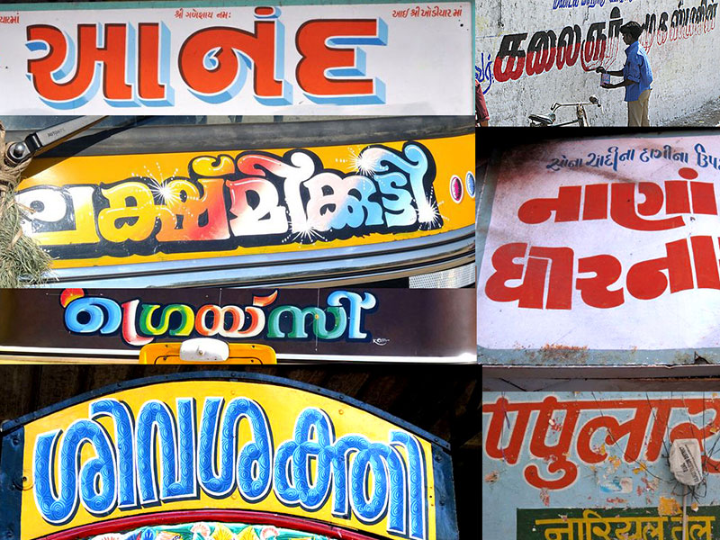

Coiny
A Fat Rounded Latin + Tamil Font

Rounded brush point
Basic geometrical shapes
Vernacular inspired
A lot of fun for titles and headlines

Naturally bold
Born on street to shine on screen
Over 80 million people around the world speak Tamil
So, I want to be popular but very usefull too

I hope to get help and opinions of everyone!
Marcelo Magalhães
https://github.com/marcelommp/Coinyhttp://marcelommp.github.io/Coiny/
G+https://plus.google.com/u/0/110296248605870779500/posts
Twitter:
@tipografialibre
Instagram:
tipografialibre
marcelommp
facebook.com/tipografialibre